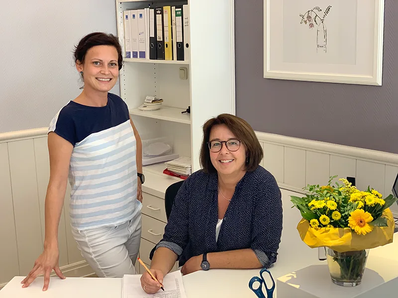

Zahnarztpraxis Brix
Wir freuen uns
auf Ihren Besuch.
Ein Termin, eine Frage oder Ihr erster Besuch bei uns: Rufen Sie uns gerne während unserer Sprechzeiten an.
Termin vereinbaren
Lassen Sie uns sprechen.
03904 44113Wir vereinbaren Ihren Termin persönlich am Telefon und beantworten gerne Ihre Fragen.
Telefax: 03904 710781
Zeit für Sie
Unsere Sprechzeiten
| Montag | 08–12 & 14–18 Uhr |
|---|---|
| Dienstag | 08–12 & 14–18 Uhr |
| Mittwoch | 08–12 & 14–18 Uhr |
| Donnerstag | 08–12 Uhr |
| Freitag | 08–12 Uhr |
Samstag und Sonntag geschlossen.

Ihr Weg zu uns
In Haldensleben
zu Hause.
Zahnarztpraxis Brix
Dammühlenweg 13
39340 Haldensleben · Althaldensleben
Gut zu wissen
Vor Ihrem Besuch
Wie vereinbare ich einen Termin?
Bitte rufen Sie uns unter 03904 44113 an. Während unserer Sprechzeiten finden wir gemeinsam einen passenden Termin.
Wie kann ich einen Termin verschieben?
Rufen Sie uns möglichst frühzeitig an, wenn Sie Ihren Termin nicht wahrnehmen können. Wir vereinbaren gerne einen neuen Termin mit Ihnen.
Wohin wende ich mich außerhalb der Sprechzeiten?
Informationen zum zahnärztlichen Notdienst finden Sie beim Notdienst Bördekreis ↗.